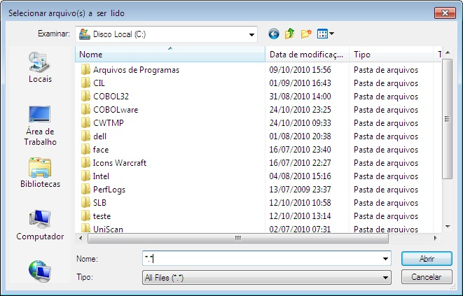
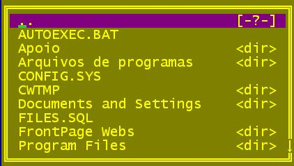

Procurar arquivo.
Open File;lb-arquivo
[
TITLE mensagem
]
[ LINE linha
]
[ COLUMN coluna
]
[ HEIGHT linhas
]
[ PATH pasta
]
[ DEFAULT
especificação-de-arquivo
]
[ WITH-DIR
]
[ WITH-DRIVES
]
[ WITH-NEWDIR
]
[ WITH-NEWFILE
]
Variável de até 50 bytes que receberá o nome do arquivo informado pelo usuário. Retorna em branco caso o usuário cancele a função.
Título da janela de até 78 caracteres.
Linha de posicionamento da janela.
Coluna de posicionamento da janela.
Altura da janela em linhas.
pasta
Pasta inicial, se emitida será assumida a pasta corrente e *.*.
Nome de arquivo a ser sugerido ao usuário.
Habilita a navegação entre diretórios.
Habilita a navegação entre
unidades de disco
WITH-NEWDIR
Permite a que o usuário crie novas pastas.
Permite que o usuário informe um nome de arquivo inexistente para ser criado.
A acentuação do arquivo texto deve ser codificada com a página de código 850. Os processadores de tela se encarregam de traduzir para o codificação apropriada à plataforma de execução.
Os parâmetros de posicionamento e dimensionamento da janela não tem efeito no ambiente Windows.
|
Codificação COBOL |
|
EXEC COBOLware Open
FILE;lb-arquivo |
|
Efeito no modo gráfico |
|
 |
|
Efeito no modo texto |
|
 |